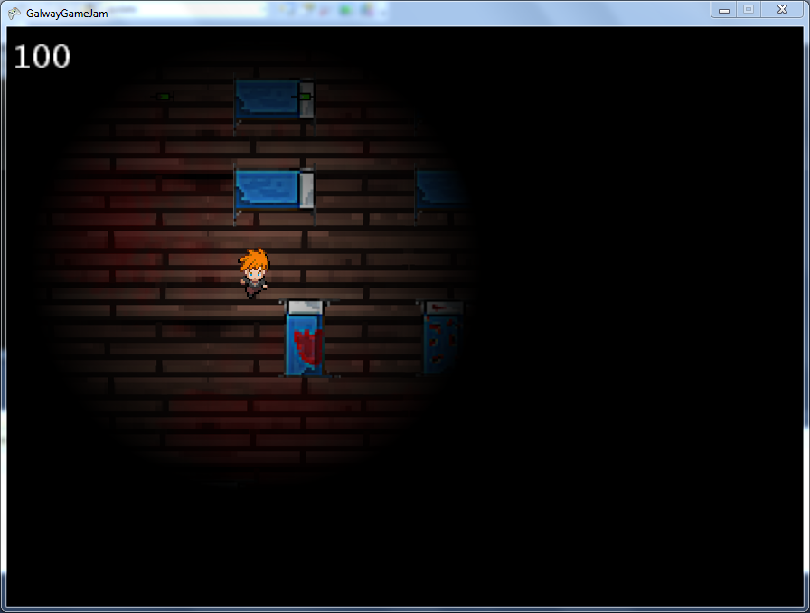

Prototype produced during the Galway GameJam 2013
A big thanks to my teammates. Code on GitHub
To run the game:
- Install Visual Studio 2010 Express
- Install Service Pack 1 for Visual Studio 2010
- Install XNA
- Restart Windows
- Open GalwayGameJam.sln in Visual Studio and run it in debug mode
